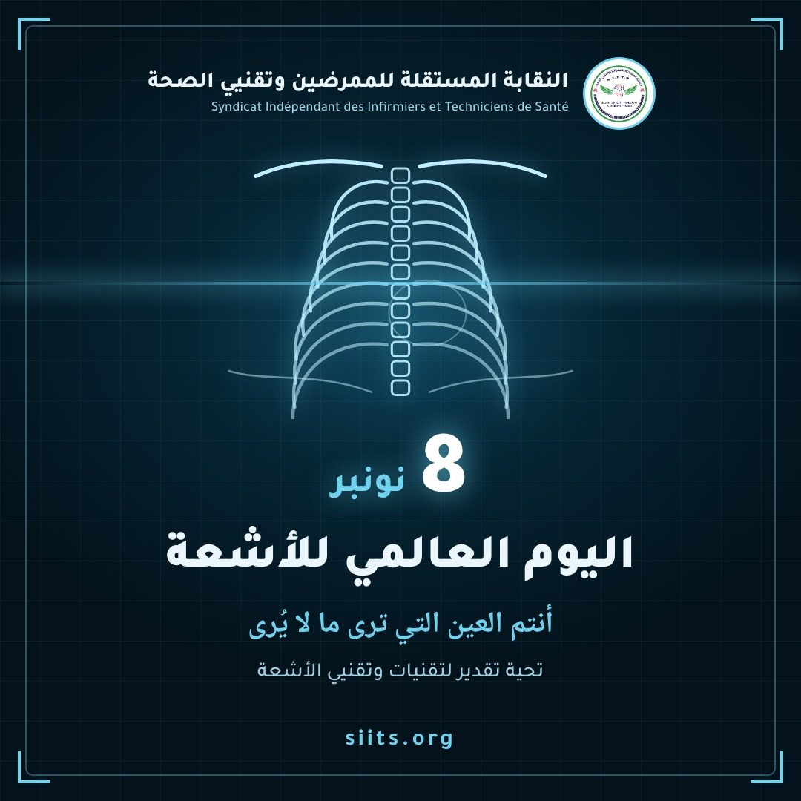

تهنئة بمناسبة اليوم العالمي للأشعة

بمناسبة اليوم العالمي للأشعة، الذي يصادف 8 نونبر من كل سنة، ذكرى اكتشاف الأشعة السينية على يد العالم فيلهلم كونراد رونتغن سنة 1895، تتقدم النقابة المستقلة للممرضين وتقنيي الصحة بأحرّ التهاني وأصدق عبارات التقدير إلى كافة تقنيات وتقنيي الأشعة، بالمستشفيات والمراكز الصحية عبر ربوع المملكة.
أنتم العين التي ترى ما لا يُرى. خلف كل تشخيص دقيق صورةٌ التقطتها أيديكم، وخلف كل صورة كفاءةٌ ومسؤولية والتزام يومي في خدمة المرضى، رغم ضغط العمل ونقص الموارد البشرية والتجهيزات.
وبهذه المناسبة، تجدد النقابة مطالبتها بتوفير وسائل الوقاية والحماية من الإشعاع واحترام معايير السلامة الإشعاعية بجميع المصالح، والتتبع الطبي المنتظم والقياس الدوري لجرعات الإشعاع لكل العاملين، وتعويض عن الأخطار المهنية يتناسب مع حجم المخاطر، وسد الخصاص في الموارد البشرية وتوفير ظروف عمل آمنة وكريمة.
كل عام وأنتم عين الطب ونبض التشخيص.
فتح في تطبيق النقابة